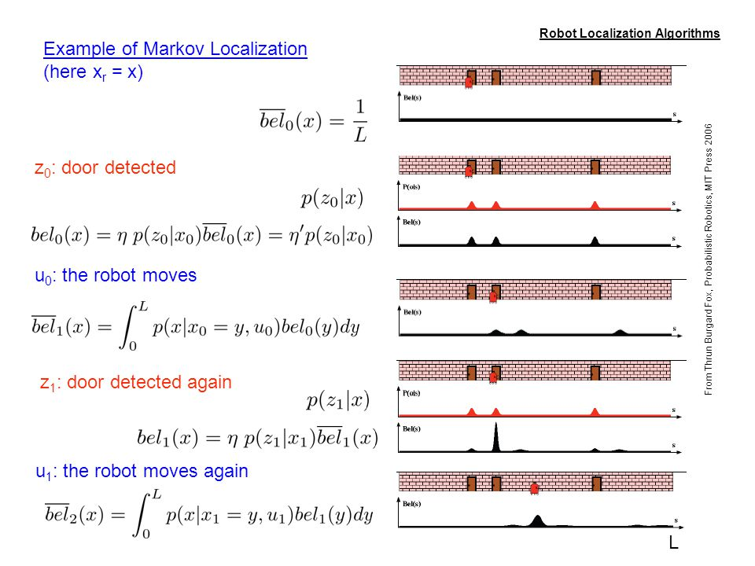

Localization
Tue 05 April 2016
These notes were taken from the Udacities course I took on robotics and also follows Dr. Thrun's book Probabilistic Robotics
- Localization
- Estimating a robot's coordinates in an external (e.g., world) reference frame. Typically this is the transformation between a robot's local frame and a global (world) reference frame. This allows a robot to determine its pose (x,y,:math:theta) by fusing multiple noisy sensor readings in its local frame and either manipulating objects in the global map or navigating through free space in the global map.
- Belief
- A robot's momentary estimate of its location, represented as a probability density function, over the entire space of all locations
- Location
- A robots position in an external reference frame (e.g., \((x,y)\))
- Pose
- A robot's location with its orientation (e.g., \((x,y,\theta)\))
- Prior Belief
- Start/initialize the belief to a uniform max confusion
- Posterior Belief
- After measurements are taken
- Position Tracking
- When a robot estimate's its pose over time given an initial pose.
- Global Localization
- When a robot must figure out where it is and it was not given an initial pose.
- Kidnapped Robot
- Although a robot will probably not be kidnapped, the realistic situation is a robot whose global localization has failed. Thus, the robot thinks it is somewhere it is not. Eventually, sensor readings will appear that will force the robot to realize it doesn't know where it is. Therefore, a robot must be able to recover from a failure of this type.

\(p(x_i | z)\) posterior distribution given measurement z
Inaccurate Robot Motion

\begin{equation*}
p(x_{i+2} | x_i) = 0.8
p(x_{i+1} | x_i) = 0.1
p(x_{i+3} | x_i) = 0.1
\end{equation*}
- loose info from movement
- gains info from sensing
entropy: \(\sum p(x_i) log p(x_i)\)
Types of Localization Filters
| Filter | Type | Comments |
|---|---|---|
| Kalman Filter (KF) | Probabalistic | Linear |
| Extended Kalman Filter (EKF) | Probabalistic | Non-linear equations linearized by taking 1st derivative (e.g., Jacobian) |
| Information Filter | Probabalistic | Linear |
| Histogram Filter (HF) | Non-parametric | Decomposes state space into finite many convex regions and represents the cumulative posterior for each region by a single probability value |
| Partical Filter (PF) | Non-parametric | Like the HF, it approximates the posterior by a finite number of parameters. The samples of the posterior are called 'particals' |
Simple Example
Taken from Probabilistic Robots, the figure below shows how a robot figures out globally where it is.

- The first position, the robot doesn't know where it is, so the belief (\(overline{bel}_0(x)\) is set equally for all locations
- Next, the robot detects a door, so the position, \(p(z_0|x)\), is set to likely infront of every door on the map.
- The belief function is updated by multiplying the position esitmate with the previous belief. Now the robot thinks it is equally likely it is infront of a door, but low probability it is anywhere along the wall.
- The robot move a distance and also moves the belief distrobution an equal amount ... note it is now infront of another door (different than the first)
- Again, the position is updated such that the robot believes it is infront of a door, but it is unable to determine which door.
- Updating the belief function with this new information (old belief multiplied with new position) results in the robot now believing strongly it is infront of the second door.
- Moving the robot some more (and the belief distrobution), the robot knows it is not infront of a door, but somewhere along a wall. Updating the current belief function (position given it is not infront of door multiplied by the old belief function moved the distance the robot moved) results in the robot believing it is somewhere along the wall.
Markov localization is independed of the underlying representation of the state space.
References
- Sebastian Thrun, Wolfram Burgard, and Dieter Fox. 2005. Probabilistic Robotics (Intelligent Robotics and Autonomous Agents). The MIT Press.
- Partical filters on Wikipedia